무선설비기사 (2017-06-10 기출문제)
1과목: 디지털 전자회로
1. 다음과 같은 정류회로에 대한 설명으로 틀린 것은?
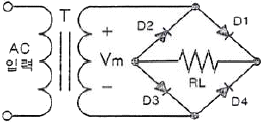
- (+) 반주기에는 D1과 D3가 On되어 정류작용을 한다.
- 고압 정류회로에 적합하다.
- Tap형 전파정류회로에 비해 정류효율이 낮고 전압 변동률이 크다.
- 중간 Tap이 있어 대형 변압기로 사용할 수 있다.
(정답률: 76%)

2. 다음 중 직류 전압 또는 직류 전류의 맥동률을 감소시키기 위한 회로가 아닌 것은?
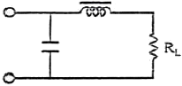
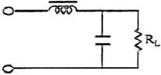
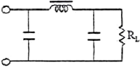
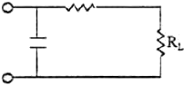
(정답률: 78%)
3. 고주파 증폭회로에서 중화 조정을 수행하는 목적은?
- 이득의 증가
- 주파수의 안정
- 전력 효율의 증대
- 자기 발진의 방지
(정답률: 67%)
4. 다음은 궤환율이 0.04인 부궤환 증폭기 회로이다. 저항 Rf의 값은?
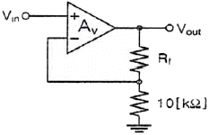
- 120[kΩ]
- 180[kΩ]
- 220[kΩ]
- 240[kΩ]
(정답률: 68%)
5. 다음과 같은 연산증폭기 회로의 출력 전압은?
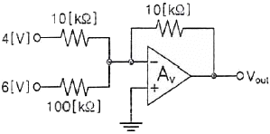
- -8.4[V]
- -4.6[V]
- -2.3[V]
- -1.6[V]
(정답률: 80%)
6. 다음 중 푸시풀(Push-Pull) 전력증폭회로의 가장 큰 장점은?
- 우수 고조파 상쇄로 왜곡이 감소한다.
- 직류성분이 없어지기 때문에 효율이 크다.
- A급 동작시 크로스오버(Cross Over) 왜곡이 감소한다.
- 기수와 우수 고조파 상쇄로 효율이 증가한다.
(정답률: 77%)
7. 다음 회로는 빈-브릿지(Wien-Bridge) 발진회로이다. R1, R2 값이 감소할 경우 발진주파수의 변화는?
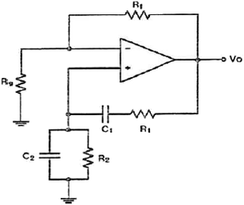
- 증가한다.
- 감소한다.
- 변화없다.
- 발진이 되지 않는다.
(정답률: 81%)
8. 병렬저항형 이상형 발진회로에서 1.6[kHz]의 주파수를 발진하는데 필요한 저항 값은 약 얼마인가? (단, C=0.01[μF])
- 2[kΩ]
- 4[kΩ]
- 6[kΩ]
- 8[kΩ]
(정답률: 63%)
9. 1,000[kHz]의 반송파를 5[kHz]의 신호주파수로 진폭 변조할 경우 출력 측에 나타나는 주파수가 아닌 것은?
- 995[kHz]
- 1,000[kHz]
- 1,0⑤[kHz]
- 1,990[kHz]
(정답률: 84%)
10. 진폭 변조파의 전압이 e=(200+50sin2π100t)sin2π×108t[V]로 표시되었을 때 변조도는 약 몇 [%]인가?
- 25
- 50
- 75
- 95
(정답률: 65%)
11. 다음 중 디지털 복조에 대한 설명으로 틀린 것은?
- ASK(Amplitude Shift Keying)에 대한 복조는 비동기식 포락선 검파만을 이용한다.
- 동기 검파는 송신신호의 주파수와 위상에 동기된 국부발진 신호와 입력 신호를 곱하게 하는 곱셈 검파기이다.
- 비동기식 포락선 검파방식은 PSK(Phase Shift Keying)의 복조에는 이용되지 않는다.
- 비동기식 검파는 동기 검파보다 시스템은 간단하지만 효율이 떨어진다.
(정답률: 66%)
12. 정보 전송 기술에서 다음 그림과 같은 변조 파형을 얻을 수 있는 변조 방식은?
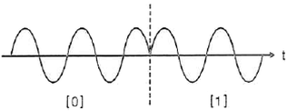
- ASK(Amplitude Shift Keying)
- PSK(Phase Shift Keying)
- FSK(Frequency Shift Keying)
- QASK(Quadrature Amplitude Shift Keying)
(정답률: 78%)
13. 다음 중 트랜지스터의 스위칭 작용에 의해서 발생된 펄스 파형에서 링깅(Ringing) 현상이 생기는 이유는?
- 낮은 주파수 성분 때문이다.
- 직류분이 잘 통하지 않기 때문이다.
- 높은 주파수 성분에 공진하기 때문이다.
- 증폭기의 저역 특성이 나쁘기 때문이다.
(정답률: 79%)
14. 다음 중 슈미트 트리거회로(Schmitt Trigger Circuit)에 대한 설명으로 틀린 것은?
- 구형파 펄스 발생회로로 사용된다.
- 비안정 멀티바이브레이터 회로이다.
- 입력전압의 크기가 출력의 On, Off 상태를 결정해 준다.
- 두 개의 안정상태를 갖는 회로이다.
(정답률: 70%)
15. RS 플립플롭 회로의 출력 Q 및 Q는 리셋(Reset) 상태에서 어떠한 논리 값을 가지는가?
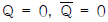
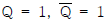
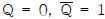
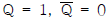
(정답률: 75%)
16. 다음 그림과 같은 RS 플립플롭에서 R 입력과 S 입력 사이에 NOT 게이트를 추가하면 어떤 기능을 갖는 플립플롭인가?
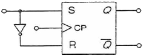
- T형 플립플롭
- N형 플립플롭
- JK형 플립플롭
- D형 플립플롭
(정답률: 70%)
17. J-K 플립플롭은 두 개의 입력 데이터(Data)에 의하여 출력에서 몇 개의 조합(Combination)을 얻을 수 있는가?
- 2
- 4
- 8
- 16
(정답률: 78%)
18. 25진 리플 카운터를 설계할 경우 최소한 몇 개의 플립플롭이 필요한가?
- 3개
- 4개
- 5개
- 6개
(정답률: 85%)
19. 서로 다른 2개 이상의 신호를 하나의 통신 채널로 전송하는데 필요한 장치는?
- 멀티플렉서
- 비교기
- 인코더
- 디코더
(정답률: 83%)
20. 반가산기(Half Adder)에서 A = 1, B = 1일 경우 S(Sum)의 값은?
- -1
- 1
- 0
- 2
(정답률: 80%)
2과목: 무선통신 기기
21. 어떤 AM송신기의 안테나 전류가 무변조되었을 때 11.75[A]이지만 변조되었을 때는 14.14[A]까지 증가하였다면 변조율은 약 몇 [%] 인가?
- 54[%]
- 74[%]
- 84[%]
- 94[%]
(정답률: 49%)
22. 다음 중 영상 주파수를 개선하기 위한 방법으로 틀린 것은?
- 중간 주파수를 낮게 정함으로써 영상 주파수에 의한 혼신을 감소시킨다.
- 특정한 영상 주파수에 대한 Trap 회로를 입력회로에 넣는다.
- 고주파 증폭단을 두고 동조회로 Q를 크게 한다.
- 고주파 동조 증폭단을 증설한다.
(정답률: 66%)
23. 다음 중 DPSK(Differential Phase Shift Keying) 방식에 대한 설명으로 틀린 것은?
- BPSK(Binary Phase Shift Keying) 방식에 비해 S/N 값이 우수하다.
- 회로가 간단해 무선 LAN(Local Area Network) 분야의 변조 방식으로 사용된다.
- PSK 동기 검파만 가능한 단점을 보완한 차동 위상 검파 방식이다.
- Delay 회로가 필요하다.
(정답률: 60%)
24. 다음 중 BPSK(Binary Phase Shift Keying) 변조방식에 대한 설명으로 틀린 것은?
- 정보 데이터의 심볼값에 따라 반송파의 위상이 변경되는 변조 방법이다.
- 이진 신호의 S1(t)와 S2(t)의 위상차기 180[°]가 될 때 성능이 최대가 된다.
- 점유대역폭은 ASK(Amplitude shift keying)와 같으나 심볼 오류 확률은 낮다.
- M진 PSK 방식의 대역폭 효율은 변조방식의 영향을 받는다.
(정답률: 62%)
25. QPSK(Quadrature Shift Keying) 신호의 보(Baud)속도가 400[bps]이면 데이터 전송속도는 얼마인가?
- 100[bps]
- 400[bps]
- 800[bps]
- 1,600[bps]
(정답률: 81%)
26. 진폭 변조와 위상 변조를 결합하여 위상선도 상에서 점들의 위치를 달리하는 변조 방식은?
- QAM(Quadrature Amplitude Modulation)
- DPSK(Differential Phase Shift Keying)
- CPFSK(Continuous Phase Frequency Shift Keying)
- GMSK(Gaussian Filtered Minimum Shift Keying)
(정답률: 84%)
27. 다중접속 기술 방식 중 OFDM(Orthogonal Frequency Division Multiple Access) 방식의 단점으로 옳은 것은?
- 타임슬롯 동기화가 어렵다.
- 주파수 자원의 이용 효율이 낮다.
- 복잡한 전력제어 알고리즘이 필요하다.
- 시간동기와 주파수동기에서 오류가 발생하면 성능저하가 심각하다.
(정답률: 78%)
28. 전송할 신호의 주파수에 비해 높은 주파수의 반송파를 이용하여 1과 0을 진폭, 주파수 및 위상에 대응하여 전송하는 방식은?
- 문자 동기 전송 방식
- 대역 전송 방식
- 차분 방식
- 다이코드 방식
(정답률: 81%)
29. 다음 중 표본화 오차의 발생 원인에 해당되지 않는 것은?
- 반올림(Round-Off) 오차
- 절단(Truncation) 오차
- 엘리어싱(Aliasing) 오차
- 과부하(Overload) 오차
(정답률: 63%)
30. 다음 중 GPS(Global Positioning System)를 이용하여 위치 측정 시 발생하는 오차가 아닌 것은?
- 위성 시계의 오차
- 위성 궤도의 오차
- 온도 상승의 오차
- 다중경로 등으로 인한 거리 오차
(정답률: 84%)
31. 다음 중 축전지 취급상의 주의할 점에 대한 설명으로 틀린 것은?
- 방전한 상태로 방치하지 말 것
- 충전은 규정 전류로 규정 시간에 할 것
- 축전지의 전압이 약 1.0[V], 비중 0.5가 되면 방전을 정지시키고 곧 충전할 것
- 극판이 전해액 면에서 노출하지 않을 정도로 전해액을 보충해 둘 것
(정답률: 78%)
32. 다음 중 쵸크 입력형 평활회로에 대한 설명으로 틀린 것은?
- 정류기에 충격전류의 모양으로 전류가 흐르지 않는다.
- 큰 직류출력을 얻을 수 있다.
- 전압 변동률이 작다.
- 높은 출력전압과 작은 맥동률이 요구될 때 사용된다.
(정답률: 58%)
33. 무부하시 직류 출력전압이 10[V]인 정류회로의 전압 변동률이 10[%]일 경우, 부하시 직류 출력전압은 약 얼마인가?
- 7.09[V]
- 8.09[V]
- 9.09[V]
- 10.09[V]
(정답률: 80%)
34. 다음 전원 공급 장치의 설비 중 수 변전설비의 종류에 적합하지 않은 것은?
- 단로기
- 피뢰기
- 분전반
- 배전용 변압기
(정답률: 60%)
35. 기본파 전압이 10[V], 제2고조파 전압이 4[V], 제3고조파 전압이 3[V]일 때 전압왜율은 몇 [%]인가?
- 10[%]
- 25[%]
- 50[%]
- 80[%]
(정답률: 79%)
36. 다음 중 계수형 주파수계에 대한 설명으로 잘못된 것은?
- ±1 Count 오차는 계수시간과 피측정 신호의 상대 위상 관계 때문에 발생한다.
- ±1 Count 오차를 작게 하기 위해 게이트 시간을 짧게 한다.
- 매초당 반복되는 파의 수를 펄스로 변환하여 계수한 후 표시하는 방식이다.
- 측정범위를 확대하기 위해서는 비트다운(Beat Down)방식을 사용한다.
(정답률: 67%)
37. 전원회로의 부하에 병렬로 블러더(Bleeder) 저항을 사용하면 전원특성은 어떻게 되는가?
- 전압변동률이 개선된다.
- 리플함유율이 개선된다.
- 정류효율이 저하된다.
- 최대역전압이 증가한다.
(정답률: 70%)
38. 정재파 전압의 최대치를 Vmax, 정재파 전압의 최소치를 Vmin이라 할 때 정재파비를 구하는 식을 바르게 나타낸 것은?
- Vmax/Vmin
- Vmin/Vmax
- (Vmax+Vmin)/(Vmax-Vmin)
- (Vmax-Vmin)/(Vmax+Vmin)
(정답률: 72%)
39. 단상 전파 정류회로의 직류 출력전압과 직류 출력전력은 단상 반파 정류회로와 비교하여 각각 몇 배인가?
- 1배, 2배
- 1배, 4배
- 2배, 2배
- 2배, 4배
(정답률: 84%)
40. 평활회로는 어떤 필터의 역할을 수행하는가?
- LPF(Low Pass Filter)
- HPF(High Pass Filter)
- BPF(Band Pass Filter)
- BRF(Band Rejection Filter)
(정답률: 76%)
3과목: 안테나 공학
41. 두 개의 금속판을 마주보게 놓고 전압을 인가했을 때 극판 사이의 전속밀도(D)는 얼마인가?(단, 극판에 축적된 전하를 Q[C], 극판 면적을 S[m2], 극판 사이의 유전율을 ε[F/m]라 한다.
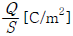
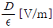
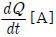
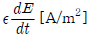
(정답률: 72%)
42. 다음 중 포인팅 벡터의 크기를 나타내는 것은? (단, E : 전계의 세기, H : 자계의 세기, μ : 투자율, ε : 유전율)
- EH
- με
- H/E
- √μ/E
(정답률: 85%)
43. 다음 중 거리에 따라 가장 감쇠가 급격하게 발생하는 것은?
- 정전계
- 유도계
- 복사전계
- 복사자계
(정답률: 82%)
44. 다음 중 분포정수형 평형-불평형 변환회로가 아닌 것은?
- 위상변환형
- 분기 도체
- 반파장 우회선로
- 스페르토프(Sperrtopf)
(정답률: 54%)
45. 복사저항이 450[Ω]인 폴디드다이폴 안테나 두 개를 λ/4 임피던스 변환기를 사용하여 100[Ω]의 평행 2선식 급전선에 정합시키고자 한다. 이 때 변환기의 임피던스 값은?
- 212[Ω]
- 275[Ω]
- 300[Ω]
- 424[Ω]
(정답률: 65%)
46. 다음 중 산란행렬(Scattering Matrix)의 구성요소인 S-파라미터의 설명으로 옳은 것은?
- 반사 계수와 전송 계수를 나타낸다.
- 전압과 전류의 관계로 4단자 회로의 특성을 나타낼 수 있다.
- 입ㆍ출력 단자를 개방하거나 단락해서 파라미터를 정의한다.
- 고주파 회로에서 사용할 수 없다.
(정답률: 55%)
47. 다음 중 마이크로파의 전송선로로서 도파관을 사용하는 이유로 가장 적합한 것은?
- 취급 전력이 작고 방사손실이 없다.
- 유전체 손실이 적다.
- 부하와의 정합상태가 불량하여도 정재파가 발생하지 않는다.
- 저역 여파기(LPF) 역할을 한다.
(정답률: 67%)
48. 다음 중 도파관의 여진의 종류가 아닌 것은?
- 정전적 결합에 의한 여진
- 분기적 결합에 의한 여진
- 작은 루프 안테나에 의한 여진
- 전자적 결합에 의한 여진
(정답률: 67%)
49. 미소다이폴을 수직으로 놓았을 때 수평면의 지향성 계수는?
- 1
- 1.5
- 2
- 2.5
(정답률: 69%)
50. 접지저항이 큰 순서로 올바르게 나열한 것은?
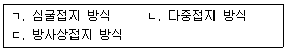
- ㄱ>ㄴ>ㄷ
- ㄷ>ㄱ>ㄴ
- ㄴ>ㄱ>ㄷ
- ㄱ>ㄷ>ㄴ
(정답률: 78%)
51. 복사저항이 200[Ω]이고, 손실저항이 35[Ω]인 안테나의 복사효율은 약 얼마인가?
- 65[%]
- 75[%]
- 85[%]
- 95[%]
(정답률: 74%)
52. 같은 전력을 급전할 때 λ/4수직 접지 안테나에서 발생되는 전계는 λ/2다이폴 안테나에 비하여 약 몇 배인가?
- 0.4
- 1.4
- 1.9
- 2.5
(정답률: 67%)
53. 다음 중 진행파형 안테나로서 예리한 지향특성을 가지며 주로 단파 고정국 또는 해안국의 송?수신용으로 사용되는 안테나는?
- 루프(Loop) 안테나
- 더블렛(Doublet) 안테나
- 디스콘(Discone) 안테나
- 롬빅(Rhombic) 안테나
(정답률: 73%)
54. 장ㆍ중파대의 송신안테나 중 수분이 많고 대지의 도전율이 양호한 경우에 사용하고 소전력의 송신 안테나에 사용되는 가장 적합한 접지방식은?
- 다중 접지
- 심굴 접지
- 가상 접지
- 방사상 접지
(정답률: 73%)
55. 다음 중 지표파에 대한 설명으로 틀린 것은?
- 장중파대에서는 지표파가 직접파에 비해 우세하다.
- 대지의 도전율이 작을수록, 유전율이 클수록 감쇠가 커진다.
- 수평 편파의 지표파가 수직 편파에 비해 감쇠가 적다.
- 주파수가 낮을수록 감쇠가 적다.
(정답률: 56%)
56. 다음 중 수정 굴절률에 대한 설명으로 틀린 것은?
- 수정 굴절률을 사용하면 구면 대기층에 대해서도 평면 대기층에 대한 스넬의 법칙을 적용할 수 있다.
- 표준대기에서 높이 h에 대한 M단위 수정 굴절률의 비 dM/dh는 음수이다.
- 수정 굴절률의 값은 높이와 비례 관계에 있다.
- 수정 굴절률의 값은 굴절률과 비례 관계에 있다.
(정답률: 76%)
57. 다음 중 전리층에 대한 설명으로 틀린 것은? (문제 오류로 실제 시험에서는 2, 4번이 정답처리 되었습니다. 여기서는 2번을 누르면 정답 처리 됩니다.)
- 임계주파수보다 낮은 주파수는 단파의 근거리통신에 사용할 수 있다.
- 야간에는 D층이 높아지고 E층 반사파가 강해진다.
- 단파통신은 주간과 야간의 주파수를 다르게 사용하는 것이 좋다.
- MUF(Maximum Usable Frequency)는 임계주파수보다 낮고 입사각과 관계가 있다.
(정답률: 80%)
58. 이동통신 채널의 특징은 반사, 회절, 산란에 의한 다경로 페이딩채널의 특징을 가진다. 이 다경로 페이딩 상황하에서 수신 성능을 개선하기 위한 방법이 아닌 것은?
- RAKE Receiver
- Transmit Diversity
- Quick Paging
- Adaptive Equalizer
(정답률: 67%)
59. 전리층을 이용한 통신에서 자동이득 조절장치(AGC)를 활용하여 방지할 수 있는 페이딩으로 가장 적합한 것은?
- 도약성 페이딩
- 선택성 페이딩
- 간섭성 페이딩
- 흡수성 페이딩
(정답률: 66%)
60. 다음 중 전자파적합(EMC)에 대한 설명으로 가장 적합한 것은?
- 전자파 양립성이라고도 한다.
- 전자파내성(EMS) 분야와 전자파기록(EMR) 분야로 구분할 수 있다.
- 전기?전자기기가 외부로부터 전자파 간섭을 받을 때 영향 받는 정도를 나타낸다.
- 발생 원인으로는 자연적인 발생원인(대기잡음, 우주잡음, 태양방사 등)과 인공적인 발생원인(의도적인 잡음, 비의도적인 잡음)으로 크게 구분한다.
(정답률: 64%)
4과목: 무선통신 시스템
61. 다음 중 도체 내 자유전자의 랜덤 운동에 의해 발생하며, 전 주파수 대역에 걸쳐 나타나므로 백색잡음이라고 불리는 잡음은?
- 충격성 잡음(Impulse Noise)
- 열 잡음(Thermal Noise)
- 누화(Crosstalk)
- 상호변조왜곡(Inter-Modulation Distortion)
(정답률: 83%)
62. 슈퍼헤테로다인 수신기에서 수신하고자 하는 주파수가 612[kHz]이고, 중간주파수가 455[kHz]일 경우 영상주파수(Image Frequency)는? (단, 상측 헤테로다인 방식으로 동작한다.)
- 1,067[kHz]
- 1,224[kHz]
- 1,522[kHz]
- 1,679[kHz]
(정답률: 67%)
63. 다음 중 PCM(Pulse Code Modulation) 다중통신의 특징이 아닌 것은?
- 전송로의 잡음이나 누화 등의 방해가 적다.
- 중계시마다 잡음이 누적되지 않는다.
- 경로(Route) 변경이나 회선 변환이 쉽다.
- 협대역 전송로가 필요하다.
(정답률: 75%)
64. 다음 중 송신측에서 코볼루션 채널 코딩률을 결정할 때, 수신자의 전파 상태가 좋은 경우 가장 많은 정보 비트를 보낼 수 있는 코딩률은? (단, CC : Convolution Code)
- 4/5 CC
- 3/5 CC
- 2/5 CC
- 1/5 CC
(정답률: 78%)
65. 다음 중 레이다의 탐지 거리를 결정하는 요인이 아닌 것은?
- 유효 반사 면적이 큰 목표일수록 멀리 탐지된다.
- 레이다 송신기 출력의 2승근에 비례하여 멀리 탐지된다.
- 출력 및 수신감도를 올리면 탐지 거리가 증대된다.
- 이득이 큰 안테나를 사용하고 짧은 파장을 사용한다.
(정답률: 73%)
66. 다음 중 위성통신에 대한 설명으로 틀린 것은?
- 정지궤도 위성통신의 경우 도플러 주파수 천이에 대한 보상이 매우 중요하다.
- 이동 위성 서비스도 정지궤도 위성을 이용할 수 있다.
- 저궤도 위성통신의 경우는 지연시간이 매우 짧다.
- VSAT(Very Small Aperture Terminal)은 고정 위성 서비스의 일종이다.
(정답률: 54%)
67. 다음 중 CDMA(Code Division Multiple Access) 방식의 장점은?
- 전력효율과 회선효율이 타 방식에 비해 가장 양호하다.
- 접속국의 수가 증가하여도 전송용량은 감소하지 않는다.
- 신호의 전송속도가 달라도 회선 설정과 변경이 용이하다.
- 전파의 간섭이나 변동, 혼신방해에 강하며 비화성이 있다.
(정답률: 66%)
68. DS(Direct Sequence)는 코드분할다중접속(CDMA)을 구현하기 위해 사용되는 대역확산 통신방식 중의 하나이다. 다음 중 DS방식을 수행하기 위해 필요한 구성요소가 아닌 것은?
- BPSK(Binary Phase Shift Keying) 변조기
- 상관검파기
- 주파수합성기
- PN(Pseudo Noise)부호 발생기
(정답률: 61%)
69. VHF(Very High Frequency)대역 2개 채널을 사용하여 국내 지상파 DMB(Digital Multimedia Broadcasting)를 송출할 때 사용할 수 있는 채널 블록의 수는?
- 2블록
- 4블록
- 6블록
- 12블록
(정답률: 66%)
70. 다음 중 브로드밴드(Broad Band) 전송 방식의 특징이 아닌 것은?
- 통신경로를 여러 개의 주파수 대역으로 나누어 이용한다.
- 디지털 신호로 변조하여 전송하는 방식이다.
- Audio/Video 등에 대한 전송도 가능하다.
- 주파수 분할 다중화 방식을 이용한다.
(정답률: 71%)
71. 다음 프로토콜 중 사용되는 기술(HomeRF, Bluetooth)이 다른 1개의 프로토콜은?
- LMP(Link Manager Protocol)
- L2CAP(Logical Link Control and Adaptation Protocol)
- SDP(Service Delivery Protocol)
- SWAP(Shared Wireless Access Protocol)
(정답률: 71%)
72. 다음의 설명에 해당되는 프로토콜 기능은 어느 것인가?
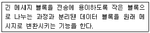
- 분리(Separation)와 캡슐화(Encapsulation)
- 세분화(Segmentation)와 재합성(Reassembly)
- 분할(Division)과 재결합(Recombination)
- 분리(Separation)와 연결(Connection)
(정답률: 74%)
73. 다음의 설명에 해당되는 프로토콜 요소는?
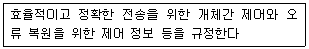
- 의미(Semantics)
- 구문(Syntax)
- 순서(Timing)
- 연결(Connection)
(정답률: 76%)
74. 다음 중 계층과 관련기술을 잘못 짝지은 것은?
- 물리 계층 - DTE/DCE
- 데이터링크 계층 - HDLC
- 네트워크 계층 - LDPA
- 트랜스포트 계층 - TCP
(정답률: 65%)
75. 위성통신에서 각 지구국에 채널을 할당하는 방식이 아닌 것은?
- 고정(사전) 할당 방식
- 요구(동적) 할당 방식
- 임의 할당 방식
- 적응 할당 방식
(정답률: 66%)
76. 다음 중 무선 랜의 전송방식에 해당하지 않는 것은?
- 적외선 방식
- 확산 스펙트럼 방식
- 초 광대역 무선통신 방식
- 협대역 마이크로웨이브 방식
(정답률: 62%)
77. 다음 중 무선통신시스템 설계 시 단파가 중장파보다 불리한 점으로 옳은 것은?
- 복사효율이 나쁘다.
- 페이딩의 영향이 더 크다.
- 안테나 설치가 어렵다.
- 원거리 통신에 불리하다.
(정답률: 63%)
78. 전파가 자유공간에서 전파할 때 거리가 2배로 증가하면 손실은 약 얼마나 증가하는가?
- 2[dB]
- 3[dB]
- 6[dB]
- 9[dB]
(정답률: 74%)
79. 다음 표에서 정의하는 것은 무엇인가?
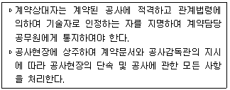
- 공사감독
- 공사안전관리자
- 공사현장소장
- 공사현장대리인
(정답률: 77%)
80. 통신망시스템이 고장이 난 시점부터 수리가 완료되는 시점까지의 평균시간을 의미하는 것을 무엇이라 하는가?
- MTTF(Mean Time To Failure)
- MTTR(Mean Time To Repair)
- MTBF(Mean Time Between Failure)
- MTBS(Mean Time Between System Incident)
(정답률: 81%)
5과목: 전자계산기 일반 및 무선설비기준
81. 기억된 내용의 일부를 이용하여 기억되어 있는 데이터에 직접 접근하여 정보를 읽어내는 장치는?
- 가상기억장치(Virtual Memory)
- 연관기억장치(Associative Memory)
- 캐시 메모리(Cache Memory)
- 보조기억장치(Auxiliary Memory)
(정답률: 73%)
82. 다음 중 동적 RAM(Dynamic RAM)의 특징에 대한 설명으로 틀린 것은?
- 전하의 양을 측정하여 저장 논리 값을 판단한다.
- 전하의 방전 때문에 주기적으로 재충전(Refresh)해야 한다.
- 1비트를 구성하는 소자가 적어서 단위 면적에 많은 저장장소를 만들 수 있다.
- 1비트를 구성하는 소자가 적어서 메모리 액세스 속도가 정적 RAM(Static RAM)보다 빠르다.
(정답률: 66%)
83. 다음 중 순차파일(Sequential File)의 특징이 아닌 것은?
- 레코드가 키 순서로 편성되므로 처리 속도가 빠르다.
- 어떠한 입ㆍ출력 매체에서도 처리가 가능하다.
- 이전의 레코드를 탐색하려면 파일을 되돌리면 된다.
- 필요한 레코드를 추가하는 경우 파일 전체를 복사해야 한다.
(정답률: 69%)
84. 다음 논리회로에 의해 계산된 결과 X는?
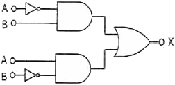
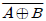
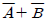
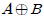
- AㆍB
(정답률: 77%)
85. 효율적인 입ㆍ출력을 위하여 고속의 CPU와 저속의 입ㆍ출력장치가 동시에 독립적으로 동작하게 하여 높은 효율로 여러 작업을 병행 수행할 수 있도록 해줌으로써 다중 프로그래밍 시스템의 성능 향상을 가져올 수 있게 하는 방법은?
- 페이징(Paging)
- 버퍼링(Buffering)
- 스풀링(Spooling)
- 인터럽트(Interrupt)
(정답률: 73%)
86. 다음 중 선점형 스케줄링(Preemptive Process Scheduling)에 해당하지 않는 것은?
- SJF(Shortest Job First) 스케줄링
- RR(Round Robin)스케줄링
- SRT(Shortest Remaining Time) 스케줄링
- MFQ(Multi-level Feedback Queue) 스케줄링
(정답률: 62%)
87. 다음 중 파일(File)의 개념을 바르게 표현한 것은?
- Code의 집합을 말한다.
- Character의 수를 말한다.
- Database의 수를 말한다.
- Record의 집합을 말한다.
(정답률: 75%)
88. 다음 명령의 수행 결과값은?
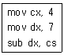
- 1.75
- 3
- 11
- 28
(정답률: 79%)
89. 마이크로프로세서는 구성된 중앙처리장치는 명령어의 구성방식에 따라 2가지로 나눌 수 있다. 이 중 연산 속도를 높이기 위해 처리할 수 있는 명령어 수를 줄였으며, 단순화된 명령구조로 속도를 최대한 높일 수 있도록 한 것은?
- SCSI(Small Computer System Interface)
- MISC(Micro Instruction Set Computer)
- CISC(Complex Instruction Set Computer)
- RISC(Reduced Instruction Set Computer)
(정답률: 76%)
90. 다음 중 컴퓨터 프로그램의 명령에서 연산자의 기능이 아닌 것은?
- 함수연산 기능
- 전달 기능
- 제어 기능
- 인터럽트 기능
(정답률: 61%)
91. 다음 중 무선국에 대한 설명으로 틀린 것은?
- 실험국은 외국의 실험국과 통신을 하여서는 아니 된다.
- 아마추어국은 비상?재난구조를 위한 중계통신을 할 수 있다.
- 아마추어국은 제3자를 위한 통신을 하여서는 아니 된다.
- 실험국이 통신을 하는 때에는 암어를 사용하여야 한다.
(정답률: 81%)
92. 전파사용료 납부기한이 1주일 경과된 경우 추가되는 가산금의 비율은?
- 체납된 전파사용료의 100분의 1
- 체납된 전파사용료의 100분의 2
- 체납된 전파사용료의 100분의 3
- 체납된 전파사용료의 100분의 5
(정답률: 66%)
93. 무선통신업무에 종사하는 자는 원칙적으로 몇 년마다 통신보안교육을 받아야 하는가?
- 10년
- 5년
- 3년
- 2년
(정답률: 81%)
94. 다음 문장의 괄호 안에 들어갈 내용으로 가장 적합한 것은?
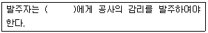
- 도급업자
- 수급인
- 용역업자
- 공사업자
(정답률: 80%)
95. 공사를 설계한 용역업자는 그가 작성한 실시설계도서를 해당공사가 준공된 후 몇 년간 보관하여야 하는가?
- 1년
- 3년
- 5년
- 7년
(정답률: 65%)
96. 다음 중 정보통신공사업자 외의 자가 시공할 수 있는 경미한 공사가 아닌 것은?
- 간이무선국의 무선설비설치공사
- 건축물에 설치되는 5회선 이하의 구내통신선로 설비공사
- 연면적 3천 제곱미터 이하의 건축물의 구내방송설비공사
- 아마추어국 무선설비설치공사
(정답률: 70%)
97. 다음 중 적합인증 대상기자재가 아닌 것은?
- 물체감시센서용 무선기기
- 광통신용 회선종단장치
- 과학용 고주파이용기기
- 주파수변조기(전송망 기자재)
(정답률: 80%)
98. 적합성평가의 취소처분을 받은 자는 취소처분을 받은 날로부터 얼마의 범위에서 해당 기자재에 대한 적합성평가를 받을 수 없는가?
- 6개월
- 1년
- 1년 6개월
- 2년
(정답률: 81%)
99. 전파형식이 F3E인 초단파 방송국의 무선설비의 점유주파수대역폭의 허용치는?
- 16[kHz]
- 180[kHz]
- 200[kHz]
- 400[kHz]
(정답률: 75%)
100. 다음 무선설비의 안전시설에 대한 설명 중 괄호 안에 들어갈 내용으로 가장 적합한 것은?
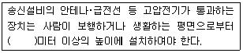
- 1.5
- 2
- 2.5
- 3
(정답률: 81%)